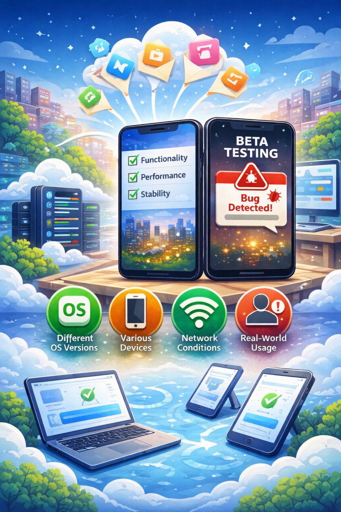
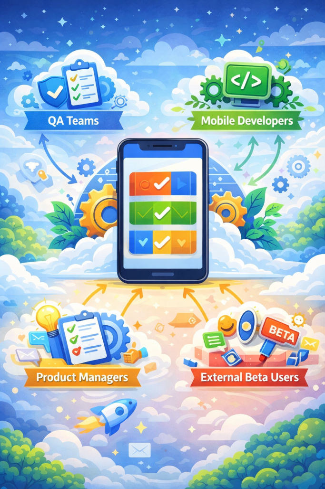
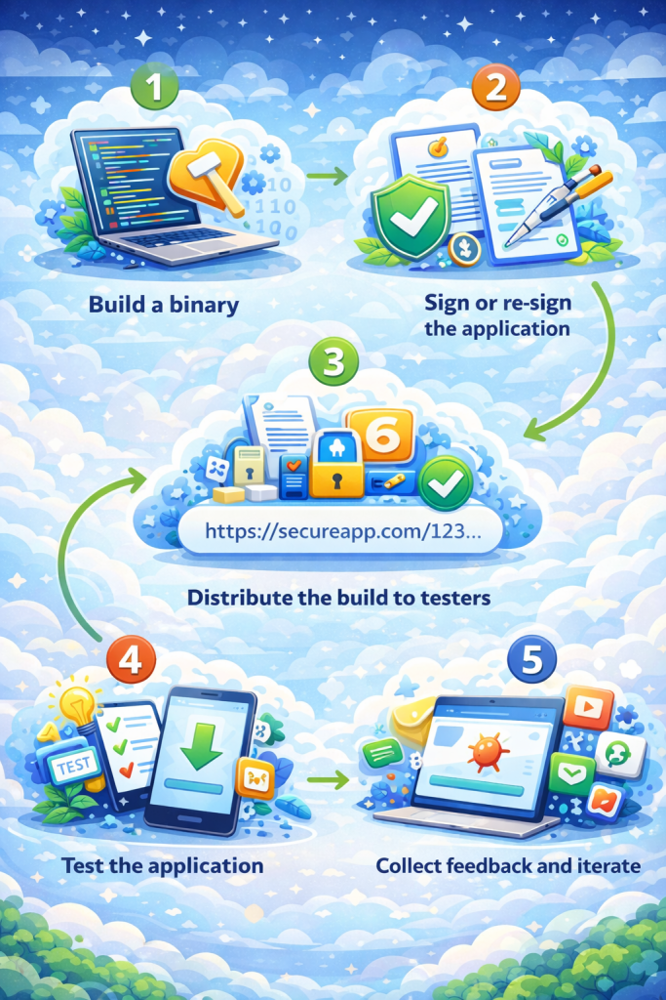

What Is App Distribution to Testers?

App distribution to testers describes how teams deliver mobile applications to internal or external testers before a public release. This stage typically occurs after development is complete but before an app is published to an app store such as the Apple App Store or Google Play. During this phase, applications are installed on real devices so testers can validate functionality, performance, and stability in real-world conditions. This process is commonly known as beta testing and plays a critical role in identifying issues before production release.
Why App Distribution to Testers Matters
App distribution to testers is essential because mobile applications behave differently once they are installed on real devices and used in real-world conditions. Differences in operating system versions, device models, network quality, and user behavior can expose issues that are not visible during development or simulator testing. Distributing apps to testers allows teams to validate critical functionality, identify performance bottlenecks, and detect stability problems before a public release.
Beyond quality assurance, tester distribution also reduces release risk. By catching defects early, teams can avoid app store rejections, negative user reviews, and costly hotfixes after launch. Structured tester distribution creates a controlled feedback loop, enabling faster iteration and more predictable release cycles.
TL;DR: App distribution to testers enables teams to validate functionality, performance, and stability on real devices before release, reducing production risk and improving release quality.
Who Uses Tester Distribution?

Apps are distributed to different groups during the testing phase, each with a specific role in validating quality before release. Common users include:
- QA teams, who perform structured functional, performance, and regression testing across different devices and operating system versions.
- Mobile developers, who verify their own changes and ensure new features work as expected in real environments.
- Product managers, who validate overall quality and confirm that the application meets product requirements and acceptance criteria.
- External beta users, who provide feedback from a real-user perspective and help uncover usability issues that internal teams may overlook.
Common Methods for App Distribution to Testers
Directly installing an .ipa or .apk file, which are distribution-ready builds for iOS and Android, is not always practical or allowed. Platform policies, access control requirements, and device restrictions often make raw file installation unsuitable for tester distribution. For this reason, teams rely on structured methods to deliver apps to testers in a controlled and reliable way. Common approaches include:
- Private download links, which allow testers to install builds through restricted URLs shared via email or internal systems.
- TestFlight, Apple's official beta distribution platform for iOS applications, commonly used to manage both internal and external testers.
- Google Play Internal or Closed Testing, which enables Android applications to be distributed to selected tester groups before public release.
- Enterprise distribution portals, which provide centralized access to internal or pre-release applications, often with authentication and audit mechanisms.
App Distribution to Testers Flow

The exact distribution process may vary depending on a team’s tools and workflow. However, the overall sequence is generally consistent across most mobile teams. App distribution to testers typically follows these steps:
- Build a binary, a distribution-ready build is generated for the target platform, such as an .ipa file for iOS or an .apk or .aab file for Android.
- Sign or re-sign the application, the binary must be properly signed so the application can be authenticated and authorized by the operating system and installed on real devices.
- Distribute the build to testers, the signed binary is made available using an appropriate distribution method, such as private links or platform-provided testing channels.
- Test the application, testers install the application on their devices and evaluate functionality, performance, and stability under real usage conditions.
- Collect feedback and iterate, feedback, bug reports, and test results are collected and shared with the development team. Based on the findings, the process may repeat, or the application may proceed toward release.
Security and Access Control for Beta Testing
Applications distributed for testing are not yet ready for production and may contain functional, security, or stability issues. Uncontrolled access to pre-release builds can introduce security risks, expose sensitive features, or negatively impact brand perception. For this reason, tester distribution should always be restricted to intended users and limited in duration. Two key security considerations include:
- Invite-only access, applications should only be accessible to explicitly invited testers. Download links and installation access must be restricted, and additional authentication methods such as single sign-on can further reduce unauthorized access.
- Expiration and revocation, access to tester builds should be time-limited. Download links, certificates, or tester permissions should expire automatically to ensure former testers do not retain indefinite access to older or unapproved versions.
Common Mistakes of App Distribution to Testers
Teams often encounter avoidable issues when distributing apps to testers, especially when processes are manual or poorly controlled. Common mistakes include:
- Sending app store builds to testers, which can expose unfinished features, trigger premature reviews, or violate platform policies.
- Lack of version tracking, making it difficult to know which build a tester is using or whether reported issues are already fixed.
- Manual tester management, where testers are added or removed by hand, leading to outdated access lists and operational overhead.
- No access expiration, allowing testers to retain access to old or unapproved builds longer than intended.
- Insufficient device coverage, where testing is limited to a small set of devices and OS versions, leaving edge cases undiscovered.
- Uncontrolled distribution links, which can be forwarded externally and accessed by unintended users.
- Missing feedback collection workflows, resulting in scattered bug reports and lost testing insights.
- Inconsistent signing configurations, causing installation failures or device trust issues during testing.
- Testing production credentials or services, which can lead to data leaks or unintended side effects during pre-release testing.
Managed Distribution Platforms
As testing programs grow in size and complexity, some teams adopt managed distribution platforms to reduce manual effort and improve consistency. These platforms can help automate build delivery, manage tester access, and maintain audit logs across multiple teams and environments. Solutions such as Appcircle are sometimes used in these scenarios to centralize tester distribution as part of a broader mobile delivery workflow.
FAQs
• TestFlight supports up to 100 internal testers and up to 10,000 external testers.
• Google Play requires a minimum of 12 opted-in testers running the app for at least 14 days in a closed testing track before production release is allowed.
When these platform-imposed limits are insufficient, some teams use managed distribution solutions to organize larger or more flexible tester groups outside store-based testing programs. Platforms such as Appcircle are sometimes used in these cases to support broader tester access and centralized distribution management.